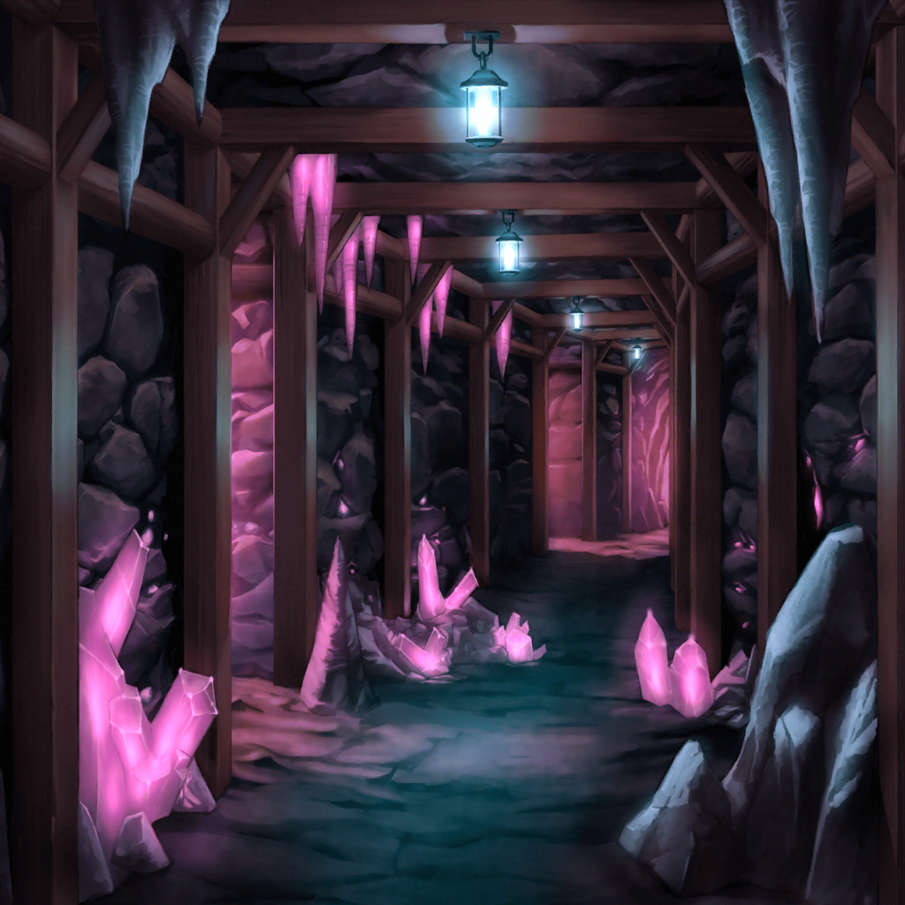
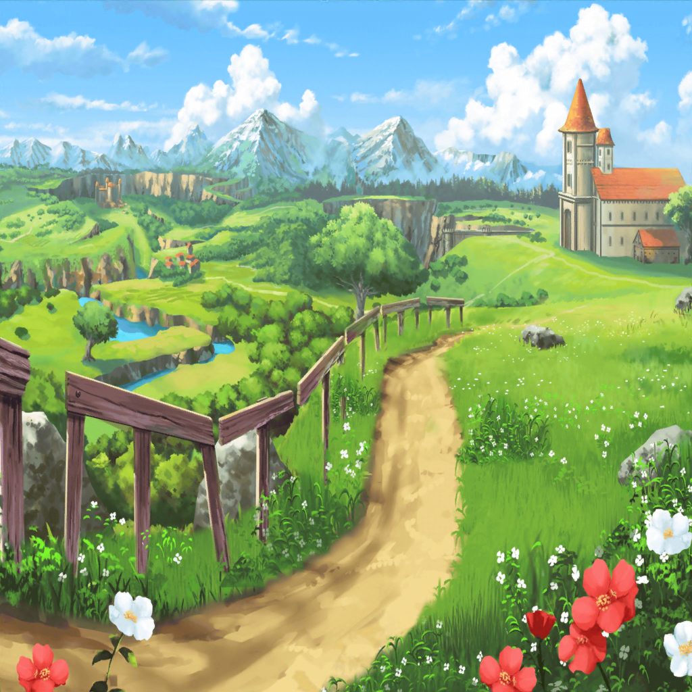

ロゴロ鉱山・深部
リサ
にしても、思ったよりあっけなくクエスト終わったね☆
聖堕天使あこ姫
初心者向けの簡単なヤツだもんっ！
あことりんりんがいれば楽勝だよっ！
RinRin
モンスターともそんなに会わなかったし、運も良かったよね
サヨ
あの大きなモンスターが出てきた時は、少し驚きましたが……
リサ
フィールドボス、だっけ？ あれは確かにね〜
RinRin
でもめったに出会うことはないですからヾ(*´ω`)ﾉﾞ
ユキナ
……？ あそこで何か光ってるわ
リサ
また薬草じゃないの？
RinRin
！！
聖堕天使あこ姫
あーーーーー！！
あこ姫&RinRin
キラぽんっ！！！
リサ
ええ！？ あれが、あこの探してたレアモンスター？
聖堕天使あこ姫
そうっ！ そうだよっ！！！
サヨ
ウサギみたいな形をしているんですね
リサ
ほんとだ……ピカピカしててかわいい〜
聖堕天使あこ姫
しっ！ 静かにっ！
リサ
え……なんで？
聖堕天使あこ姫
キラぽんはこっちに気づくと逃げちゃうから……
そーっと後ろから近づかないといけないんだよっ！
ユキナ
結構敏感なモンスターなのね
RinRin
あこちゃん、がんばって！o(>ω<)o
聖堕天使あこ姫
よ、よーっし……あこの最強スキルでやっちゃうからねっ！
RinRin
え！？Σ(°д°lll) あこちゃん、それは……
聖堕天使あこ姫
定命の円環を逸脱せし常闇の使徒に我命ず、其の混濁たる眼で
深淵を破り、彼の者を久遠の狭間へと誘いたまえ……
デッドリィ——！！
聖堕天使あこ姫
あーーーーーーーーー！
リサ
逃げた！！
聖堕天使あこ姫
そ、そんなーっ！
サヨ
あの、さっきの前口上は必要だったんですか？
RinRin
いえ……その、スキルを使うのには必要な詠唱なんですけど……
キラぽんは強いモンスターではないので、
あのスキルそのものが必要ないというか……
聖堕天使あこ姫
だ、だってキラぽんを倒せるかもしれないんだもん……
せっかくだからカッコよく倒したいなって……
リサ
そんなことしているうちに攻撃すればよかったのに……
あこ姫&RinRin
………………
ユキナ
まだ間に合うかもしれないわ、追いかけてみたらどうかしら
RinRin
そ、そうですね、行ってみましょう！
ロゴロ鉱山・深部
サヨ
こっちに来たのは間違いないのですが……
ユキナ
あの曲がり角の先は、どう？
RinRin
あそこは行き止まりなんですけど…… |_-)ジー
聖堕天使あこ姫
キラぽんっ！ 出てこーいっ！
聖堕天使あこ姫
へ……っ！？
サヨ
こ、これはさっきのフィールド……ボスでしたよね！？
リサ
マジ！？ なんでここにいんの！？
ユキナ
逃げなくて大丈夫なの？
サヨ
見つかっていなければ平気なんですよね？
RinRin
もう見つかってます！
入口の方へ走ってください！
聖堕天使あこ姫
えええーっ！？ キラぽーーーんっ！

アゼミチ村道
リサ
はぁはぁ……出られた〜
サヨ
外までは追ってこないんですよね？
RinRin
はい、ここまでくれば大丈夫ですよ(q'∀'o)
聖堕天使あこ姫
うう〜でも結局キラぽんには逃げられちゃったよお……
RinRin
仕方ないよ……また探そう？
聖堕天使あこ姫
うん……
リサ
あれ……友希那は？
あこ姫＆RinRin＆サヨ
え？
リサ
もしかして……また？
聖堕天使あこ姫
ど、どうしようっ！？
RinRin
あこちゃん落ち着いて……
フィールドボスにやられていなければ、
きっとまだ鉱山の中にいるはずだから
サヨ
……やられていたら？
RinRin
……(。-＿-。)
リサ
ま、まぁまぁもうちょっと待って、
来なかったら探しに行こうよ、ね？
聖堕天使あこ姫
友希那さん……